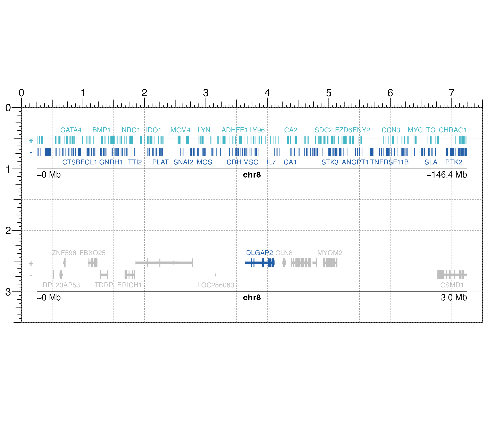
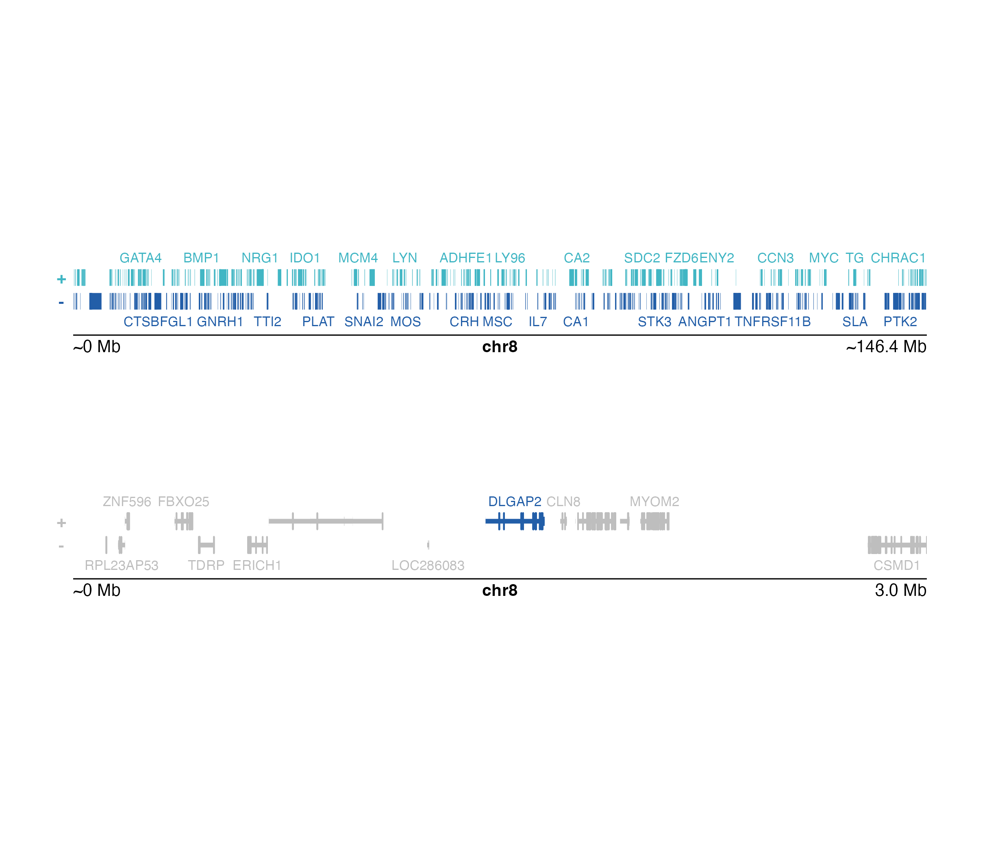

Plot a gene track for a specified genomic region
plotGenes(
chrom,
chromstart = NULL,
chromend = NULL,
assembly = "hg38",
fontsize = 8,
fontcolor = c("#669fd9", "#abcc8e"),
fill = c("#669fd9", "#abcc8e"),
geneOrder = NULL,
geneHighlights = NULL,
geneBackground = "grey",
strandLabels = TRUE,
stroke = 0.1,
bg = NA,
x = NULL,
y = NULL,
width = NULL,
height = unit(0.6, "inches"),
just = c("left", "top"),
default.units = "inches",
draw = TRUE,
params = NULL
)Chromosome of region to be plotted, as a string.
Integer start position on chromosome to be plotted.
Integer end position on chromosome to be plotted.
Default genome assembly as a string or a
assembly object.
Default value is assembly = "hg38".
A numeric specifying text fontsize in points.
Default value is fontsize = 8.
A character value or vector of length 2 indicating
the fontcolors for the plus strand and minus strand gene labels.
The first value will color the plus strand gene labels and
the second value will color the minus strand gene labels.
Default value is fontcolor = c("#669fd9", "#abcc8e").
A character value or vector of length 2 indicating the
strand fill colors for the plus strand and minus strand plot elements.
The first value will color the plus strand plot elements and
the second label will color the minus strand plot elements.
Default value is fill = c("#669fd9", "#abcc8e").
An ordered character vector of gene names to prioritize when labeling genes.
A two-column dataframe with a column named "gene" containing gene names as strings to highlight and a named column "color" containing corresponding highlight colors.
If geneHighlights is given, a character
value indicating the color for genes that are not highlighted.
A logical value indicating whether to include + and - strand labels to the left of the gene track.
A numeric value indicating the stroke width for gene
body outlines. Default value is stroke = 0.1.
Character value indicating background color.
Default value is bg = NA.
A numeric or unit object specifying genes plot x-location.
A numeric, unit object, or character containing a "b" combined with a numeric value specifying genes plot y-location. The character value will place the genes plot y relative to the bottom of the most recently plotted plot according to the units of the plotgardener page.
A numeric or unit object specifying genes plot width.
A numeric or unit object specifying genes plot height.
Justification of genes plot relative to its (x, y) location.
If there are two values, the first value specifies horizontal
justification and the second value specifies vertical justification.
Possible string values are: "left", "right",
"centre", "center", "bottom", and "top".
Default value is just = c("left", "top").
A string indicating the default units to use if
x, y, width, or height are only given
as numerics. Default value is default.units = "inches".
A logical value indicating whether graphics output
should be produced. Default value is draw = TRUE.
An optional pgParams object containing relevant function parameters.
Returns a genes object containing
relevant genomic region, placement, and grob information.
A gene track can be placed on a page by providing plot placement parameters:
plotGenes(chrom, chromstart = NULL, chromend = NULL,
x, y, width, height, just = c("left", "top"),
default.units = "inches")This function can be used to quickly plot an unnannotated gene track by ignoring plot placement parameters:
plotGenes(chrom, chromstart = NULL, chromend = NULL)Genomic annotation information is acquired through
TxDb and OrgDb-class
packages, as determined
through the assembly parameter. To avoid overcrowding of gene name
labels, plotted gene labels are by default prioritized according to
citation counts.
## Load hg19 genomic annotation packages
library("TxDb.Hsapiens.UCSC.hg19.knownGene")
library("org.Hs.eg.db")
## Set genomic coordinates
paramssmall <- pgParams(
chrom = "chr8",
chromstart = 1, chromend = 3000000,
assembly = "hg19", width = 7
)
paramsbig <- pgParams(
chrom = "chr8",
chromstart = 1, chromend = 146364022,
assembly = "hg19", width = 7
)
## Set colors
cols <- c("#41B6C4", "#225EA8")
## Create page
pageCreate(width = 7.5, height = 3.5, default.units = "inches")
## Plot genes big
genesPlot <- plotGenes(
params = paramsbig, fill = cols,
fontcolor = cols,
x = 0.25, y = 0.25, height = 0.75,
just = c("left", "top"),
default.units = "inches"
)
#> genes[genes1]
## Annotate genome label
annoGenomeLabel(
plot = genesPlot, x = 0.25, y = 1.0,
scale = "Mb", just = c("left", "top")
)
#> Warning: Start label is rounded.
#> Warning: End label is rounded.
#> genomeLabel[genomeLabel1]
## Plot genes small
genesPlot <- plotGenes(
params = paramssmall,
geneHighlights = data.frame(
"gene" = c("DLGAP2"),
"color" = c("#225EA8")
),
geneBackground = "grey",
x = 0.25, y = 2.25, height = 0.75,
just = c("left", "top"), default.units = "inches"
)
#> genes[genes2]
## Annotate genome label
annoGenomeLabel(
plot = genesPlot, x = 0.25, y = 3.0, scale = "Mb",
just = c("left", "top")
)
#> Warning: Start label is rounded.
#> genomeLabel[genomeLabel2]

## Hide page guides
pageGuideHide()
